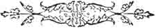

I N S T R U C T I O N S
FOR THE USE OF
FRISTER AND ROSSMANN'S
Automatic Chainstitch
Sewing Machines
PART FIVE
Special Accessories for the use of Manufacturers and others, such as Corders, Banders, &c., are made to order.
___________________________
HINTS FOR BEGINNERS
If Cotton Breaks, probable causes: -
| 1. Machine not properly threaded (p.5) | 6. Threads caught on Presser Foot. |
| 2. Cotton held too tight at starting (p.8) | 7. Obstruction in the Tension (p.7) |
|
3. Cotton around Looper (p.8) |
8. Cloth caught on Hemmer or other accessory. |
|
4. Cotton caught on Spool Pin. |
9. Goods too hard and require soaping (p.8) |
| 5. Use of inferior or unsuitable cotton (p.7) |
If Machine Runs Hard:-
| 1. Needs oiling with Benzine (p.2) | 3. Needle blunt (p.5) |
| 2. Not placed square on Base (p.1) | 4. Threads between Wheel & Connecting-rod |
If it Drops Stitches: -
| 1. Needle bent or not fully in place (p.4) | 4. Use of inferior cotton (p.7) |
| 2. Use of bad needles. | 5. Wheel turns backwards. |
| 3. Goods too hard and need soaping (p.8) |
If Belt Slips: -
Unless Machine runs hard from causes mentioned above, the belt needs tightening (p.5).
If Belt Comes Apart: -
Connect the ends as per instructions on page 5.
________________________
Oil the machine before using; run it rapidly for a few moments, and wipe it clean.
FRISTER & ROSSMANN'S
SEWING MACHINES
IMPROVED SINGER (Lockstitch),
WILLCOX & GIBBS (Chainstitch),
ARE SOLD BY THE
LEADING DRAPERS
AND THUS AT
A REDUCTION OF FROM THIRTY TO FORTY PER CENT.
ON PRICES CHARGED BY DEALERS ON THE HIRE SYSTEM.

Part One
| Part Two | Part
Three | Part Four